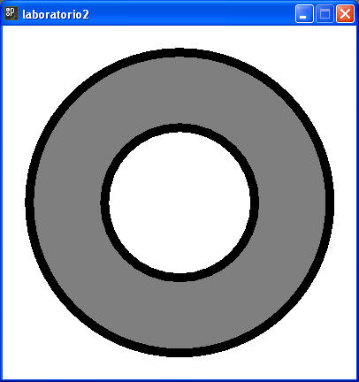
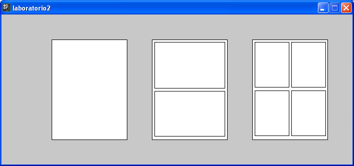
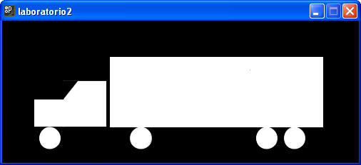
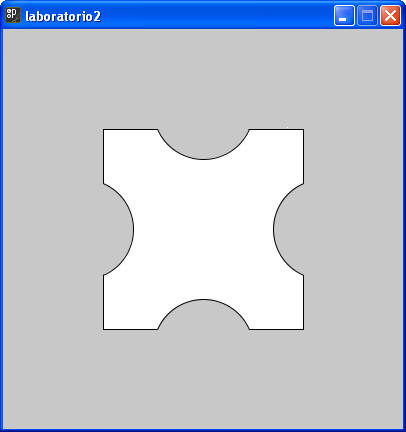
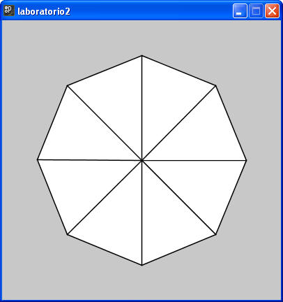

Nota: El tamaño de los dibujos queda a su criterio, lo importante es que traten de respetar las proporciones de los objetos y que se muestre el color más parecido.
1. Crea un dibujo con la siguiente apariencia:

2. Crear un dibujo, donde se muestren las siguientes ventanas.

3. Ahora crear el dibujo para el siguiente tráiler.

Sección de ejercicios opcionales
4. Crea la siguiente figura híbrida, posiblemente la solución obtenida no sea la más eficiente, posteriormente veremos como se puede resolver con el uso de vértices y curvas.

5. Crear el siguiente ventilador de triángulos, en este caso necesitas aplicar conocimientos de trigonometría para calcular los puntos donde seran dibujados los triángulos.
